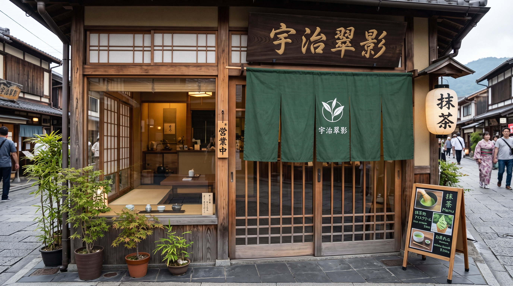

使用特選宇治抹茶搭配小農鮮乳，苦甜平衡的完美比例。

香甜草莓與濃醇抹茶交織，搭配滑順冰淇淋，口感層次豐富。

外酥內軟的現烤吐司抹上濃郁抹茶抹醬，下午茶絕配！
歡迎來到我們的抹茶手搖專賣店！我們致力於將日本靜岡與宇治的頂級抹茶文化，結合台灣道地的手搖飲特色，帶給每一位顧客最純粹、細緻的茶香體驗。

嚴選100%石臼碾磨抹茶粉，堅持現點現刷，保留抹茶最原始的濃郁茶香與回甘口感。不論是微苦濃醇的純抹茶，還是搭配鮮奶、黑糖珍珠的特色調飲，都能在這裡找到屬於你的命定風味。
抹茶君（Matcha-kun）：我們的招牌吉祥物！一隻頭上戴著茶葉、個性溫和害羞的小精靈，最喜歡在下午三點泡一杯香濃抹茶。